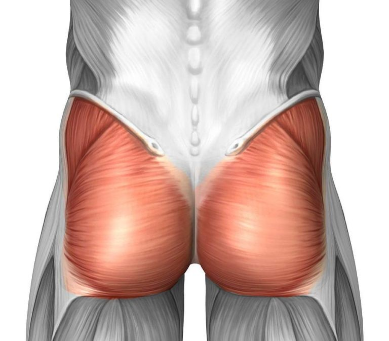
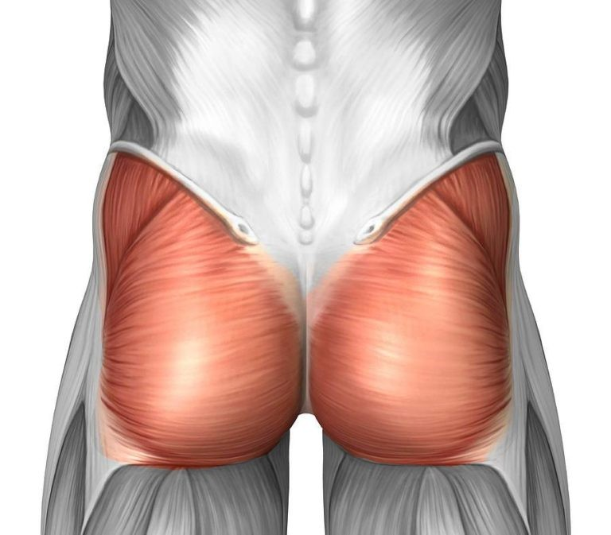

Pull day works the back and biceps. The back includes muscles like your trapezius, rhomboid minor, rhomboid major, and latissimus dorsi. Biceps are composed of a short and long head.
One of my favorite exercises for pull day is landmine rows. This one really works the back and is fun to do too! Here's how you do them:

1. Before beginning the movement, load your desired weight onto a landmine machine or attachment. Place your feet about shoulder width apart with the barbell in between your legs and bend your knees slightly. Bend forward at the hips while keeping your back neutral as you grip the barbell attachment. Brace your core and keep your shoulderblades back.

2. To begin the movement, bring the barbell towards you while squeezing your back.

3. Continue squeezing your back as you bring the barbell closer towards you. Focus on squeezing your lats to lift the barbell, not your arms.

4. Once the barbell reaches your sternum, hold this top position for a second before slowly lowering the barbell to the starting position. Congratulations! You just completed a landmine row rep.


Push day works the chest, triceps, and shoulders.
A push day staple for me is incline dumbbell bench presses. Here's how you do them:

1. To begin, sit at an incline bench with dumbbells of your desired weight. Bring the dumbbells above your head, turning them at a 45 degree angle. Tuck your shoulderblades throughout the entire movement; it should feel like you're "tucking" your shoulderblades into your back pocket. This ensures the movement is isolated in your chest muscles.

2. Bring the dumbbells down by the sides of your chest. The weights should move in a trajectory such that they are in line with your nipples at the bottom.

3. Once at the bottom, push the dumbbells up again until they are over your head. Make sure you're still tucking your shoulderblades as you push up.
 


Leg day works the glutes, hammies, quads, and calves. The glute is made up of three parts: the maximus, medius, and minimus. Make sure you're working all 3 to have a well-rounded (pun-intended) butt!
Yay! Leg Day! My favorite. I love doing barbell hip thrusts on any leg day. Here's how you do them:

1. To begin, sit in front of a bench with your loaded barbell over your legs. I definitely recommend a barbell pad or else your hips will be crying out in pain. Roll the barbell towards your hips and bring your knees towards you.

2. Hoist yourself and the barbell up by placing your elbows on the bench behind you and lifting up. The bottom of your shoulder blades should be just above the edge of the bench. Place your hands about shoulder width apart on the barbell.

3. Keep your back neutral as you bend your hips to the bottom-most position.

4. Tuck your chin and look foward as you thrust your hips upwards, pushing through your heels and keeping your back neutral. In the topmost extended position, your legs should create a 90-degree angle. This will ensure you target your glutes best. Slowly lower yourself back down to the bottom-most position.

5. Pro tip: Wince or contort your face in some way as you perform the movement. It helps lift not only your morale but the weight as well.